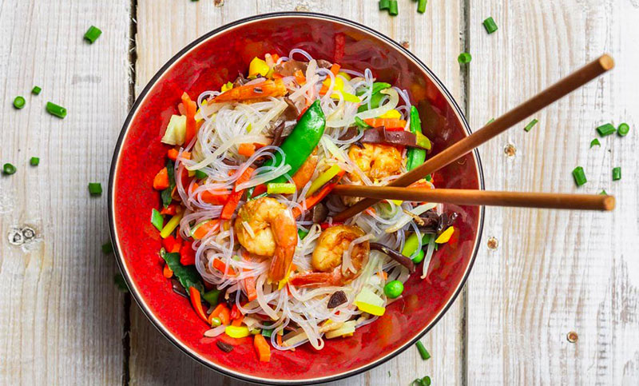

Nuestro restaurante
La gastronomía asiática ha llegado a conquistar nuestros corazones y a adueñarse de nuestros menús por sus ingredientes, lo colorido de sus platillos, los diferentes aromas, la presentación de cada uno de sus alimentos y como dejar de lado los famosos palillos de bambú.
Y aunque la comida china, japonesa, india y tailandesa tengan su propio sazón distintivo, es reconocida por ser de las más saludables debido a que tienen en común la abundancia de diferentes verduras, legumbres, mariscos y poco uso de carnes.
Sabemos también que probablemente el sushi, yakimeshi, chop suey, cerdo o pollo dulce, rollos primavera, entre otros platillos, son con los que más te has familiarizado o comes regularmente. Pero existen hoy en día otros platillos que son realmente populares en Asía y que en México están teniendo mucha popularidad.